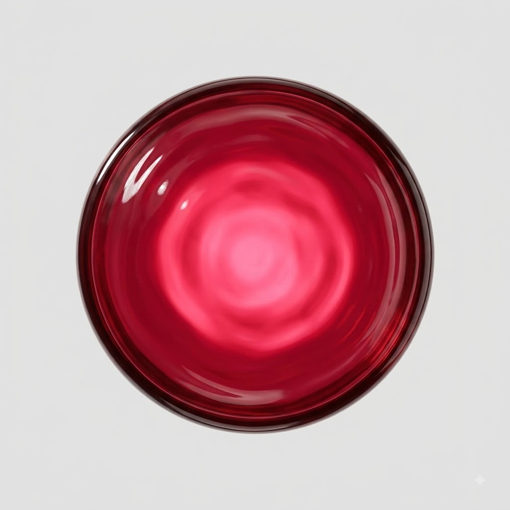
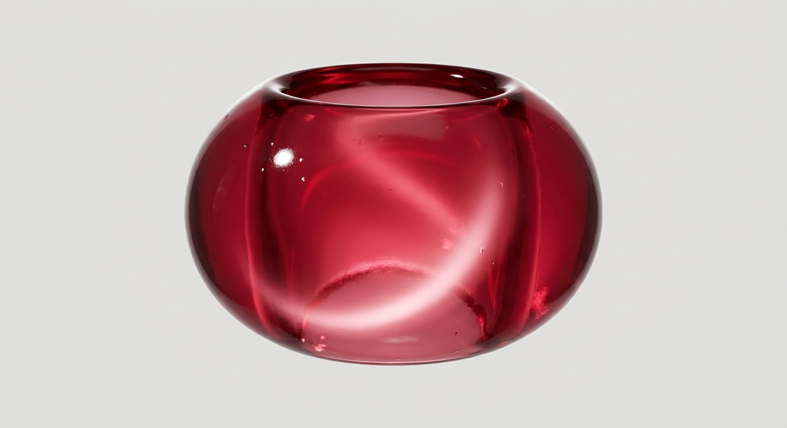
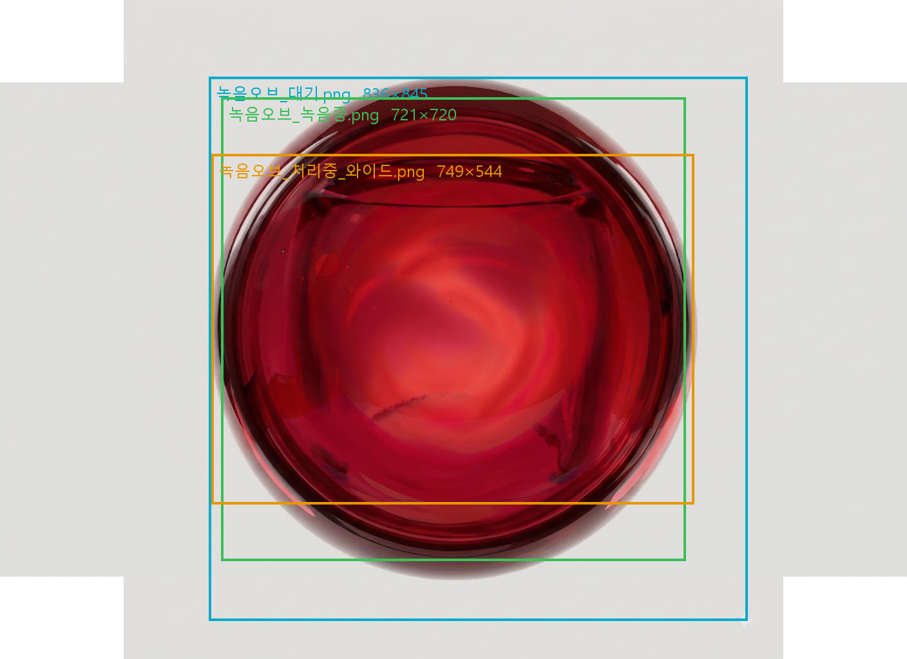

① 나란히 — 같은 배율로 놓은 세 상태
확대·축소를 하지 않았습니다. 화면에서 보이는 크기 차이가 실제 파일의 크기 차이입니다 (처리중 컷만 캔버스가 가로로 넓어 그만큼 넓게 놓았습니다).



② 겹쳐서 — 갈아 끼울 때 실제로 일어나는 일
세 컷을 앱에서와 똑같이 같은 자리에 포갠 그림입니다. 테두리 상자가 각 상태의 물체 크기예요 — 상자 세 개가 서로 어긋난 만큼 오브가 커졌다 작아졌다 하며 튑니다.

③ 숫자 — 무엇이 얼마나 어긋났나
밝기(ΔL)는 달라도 됩니다 — 명세가 녹음중에 「속빛이 더 밝게」를 요구하니까요. 색상(ΔH)이 다르면 위반입니다. 같은 재질이 색이 변할 수는 없으니까요. 두 개를 한 숫자로 합치면 정상인 밝기 변화와 위반인 색 변화가 섞여서 판정이 안 나옵니다.
| 상태 | 크기 | 중심 | 색상 ΔH (임계 3) | 밝기 ΔL (허용) | 입체감 |
|---|---|---|---|---|---|
| 대기 (기준) | 836×845 | — | — | — | 1.00 구체 |
| 녹음중 | −14.3% | 3.8% | 16.5 | 7.3 | 0.38 평면 |
| 처리중 | −23.1% | 3.8% | 16.2 | 3.1 | 0.57 그릇 |
합계 3컷 = 기준 1 + 정합 0 + 어긋남 2. 입체감은 「테두리가 중심보다 얼마나 어두운가」입니다 — 1.00 은 부피가 있는 구체, 0.38 은 납작한 렌즈예요.
④ 원인과 처방
- 원인은 «따로 구웠다»입니다. 세 컷이 각각 다른 호출에서 나왔습니다(대기·녹음중은 Gemini 웹, 처리중은 AI Studio). 생성 모델은 매 호출마다 재질을 다시 해석하기 때문에, 명세에 「the same orb」라고 적어도 호출이 갈리면 같은 물건이 안 나옵니다. 문장으로는 못 막습니다.
- 처방은 «형제로 굽지 말고 자식으로 굽는다»입니다. 대기 컷을 참조 이미지로 넣고 「이 오브에서 표면 물결과 속빛만 바꿔라, 나머지는 그대로」로 파생시킵니다. 이 통로는 이미 있습니다 — tools/재질굽기.js 의 런타임참조가 마스코트 표정 2컷(눈감음·눈웃음)을 정확히 그렇게 만들었고, 그 두 컷은 실루엣이 어긋나지 않았습니다.
- 남은 한 칸 — 오브가 마스코트보다 깊습니다. 마스코트 정본 코어는 #F65360, 오브 넷은 전부 그보다 어둡고 진합니다(ΔE 10~20). 다만 이건 결함이라고 단정하지 않습니다 — 두꺼운 유리는 실제로 더 진해 보이니까요(물리적으로 맞을 수 있습니다). 재질 픽이 나면 그때 한 번에 맞춥니다.